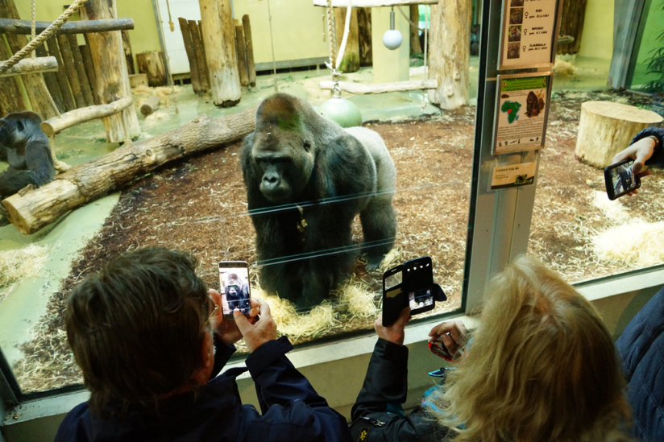

Mensch und Tier im Einklang
In unserem Zoo legen wir sowohl Wert auf das Wohl der Tiere, auch auf die Zufriedenheit unserer Besucher. Wir möchten, dass Sie bei uns die Tiere so natürlich wie möglich erleben können, deswegen versuchen wir deren Lebensbedingungen so gut es geht nachzubilden. Barrierefreie Besucherzonen sorgen dafür, dass sie schon fast Hautnah Kontakt mit ihren wilden Lieblingen haben können!
Tierschutz wird groß geschrieben
Zu oft werden Tiere in Zoos in viel zu kleinen Gehegen gehalten. Bei uns haben die Tiere ausrteichend Platz und ihre natürliche Umgebung! Das resultiert in der Verhaltensweise der Tiere. Niergends sonst können sie ihr Lieblingstier so natürlich, wie bei uns, erleben. Regelmäßig werden die Gehege kontrolliert, um den neusten erkenntnissen und Anforderungen zu entsprechen, um Ihnen auch in Zukunft die besten Erlebnisse und glücklichsten Tiere zu bieten.